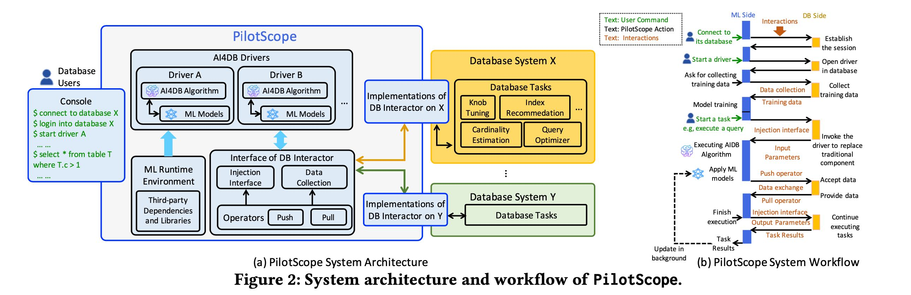
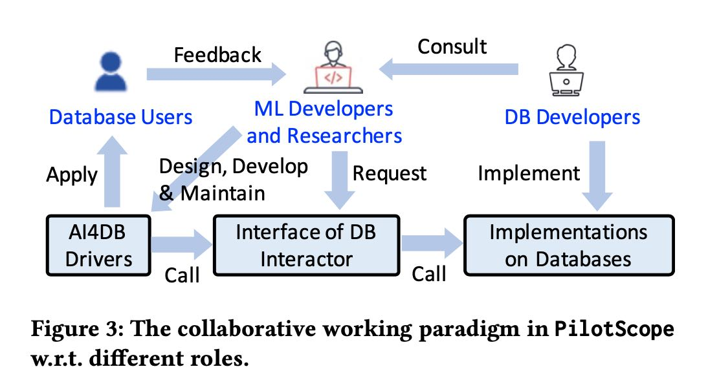
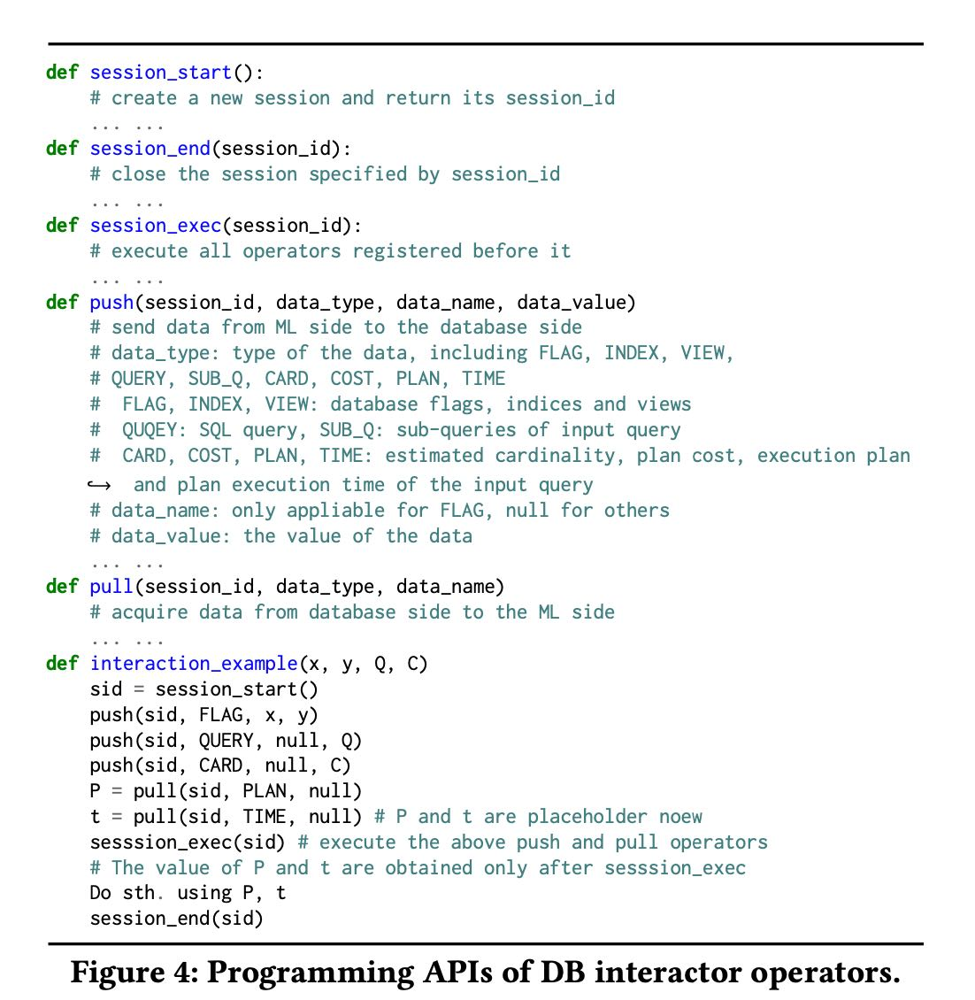
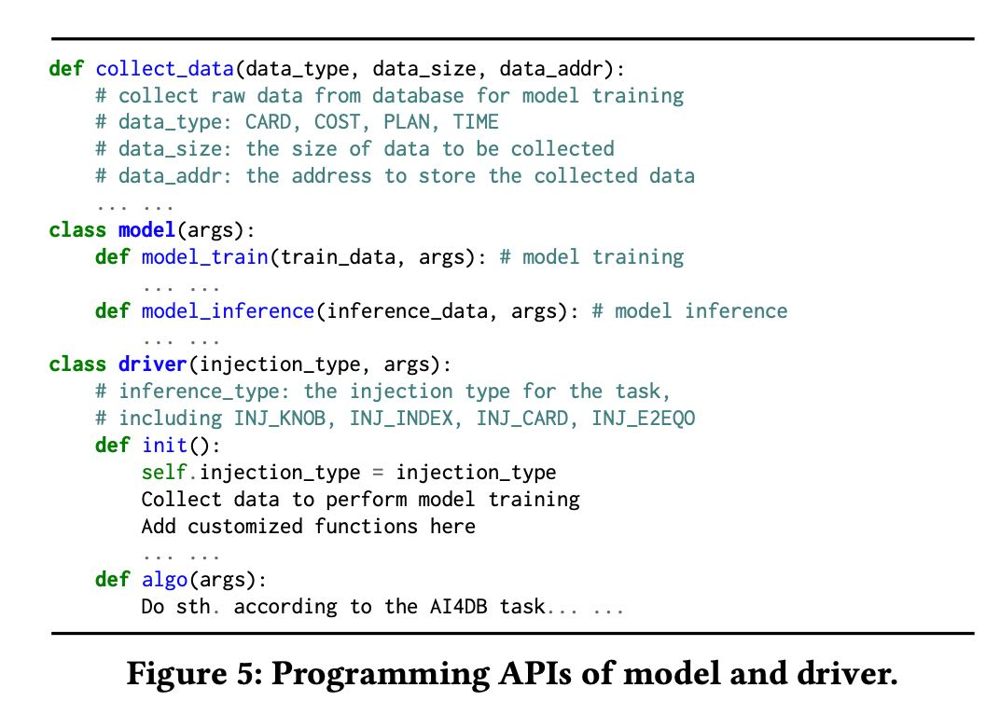
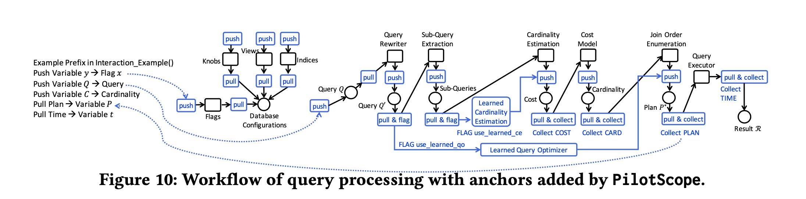

PilotScope Steering Databases with Machine Learning Drivers
这个系统的目的是要解决AI4DB的工程障碍：让ML和DB developer工作可以解耦，并且使得user可以更容易地使用AI4DB.

这个系统提出了两个概念：AI4DB driver 和 DB operator. 其中AI4DB Driver是给ML devleoper准备的：训练模型和提供推理服务，DB operator是给DB developer准备的：给AI4DB Driver提供数据，以及修改DB运行行为。

DB Operator里面主要有两个操作：push/pull. 其中push是将key/value推动进去db kernerl来修改db新闻给，而pull则是从db kernel中获取观测/训练数据。

AI4DB driver提供的接口则比较简单：定义模型，定义训练过程，定义推理过程

文章后面给了一些例子说明这个模式是如何应用在：
- Knob Tuning
- Index Recommendation
- Learned Cardinality Estimation
- Learned Query Optimizer
db operator最终也会作用在下面这些地方

文章说现在这个系统已经嵌入到了PG和Spark. 将来还可以嵌入在MySQL和MongoDB. 注意最上面架构上，Model inference其实是在单独环境下面运行的，并不是运行在DB环境上的。